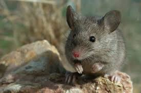
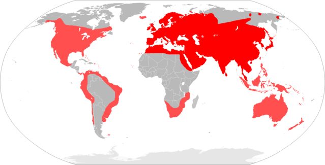

Camundongo
Nome científico:(Mus musculus Linnaeus, 1758)
Nome comum: Camundongo, rato-doméstico.
Classificação biológica:
Domínio: Eukaryota.
Reino: Animalia.
Filo: Chordata.
Classe: Mammalia.
Ordem: Rodentia.
Família: Muridae.
Gênero: Mus.
Espécie: Mus musculus.
Nutrição: Onívoro.
Hábitos alimentares: Alimenta-se de grãos, sementes, frutas, insetos e restos de alimentos humanos. É um animal altamente adaptável, podendo sobreviver em diversos ambientes.
Morfologia do corpo: Possui corpo pequeno, com cerca de 7 a 10 cm de comprimento (sem a cauda), e uma cauda que pode atingir o mesmo comprimento do corpo. Pesa entre 20 e 40 gramas. Sua pelagem é geralmente cinza ou marrom.
Comportamento: É um animal noturno, altamente social e vive em grupos. É conhecido por sua habilidade de se reproduzir rapidamente e se adaptar a ambientes urbanos e rurais.
Principais Presas: Grãos, sementes, frutas, insetos e restos de alimentos humanos.
Principais Predadores: Gatos, cobras, aves de rapina e outros pequenos mamíferos carnívoros.
Locais habitados
Distribuição:Vive em todos os biomas,incluindo áreas urbanas e rurais.
Habitat: Habita uma variedade de ambientes, desde florestas e campos até áreas urbanas. É comum em residências, celeiros e áreas de armazenamento de alimentos.
Reprodução: Reproduz-se rapidamente, com gestação de aproximadamente 19 a 21 dias. A fêmea pode dar à luz de 5 a 10 filhotes por ninhada, com várias ninhadas por ano.